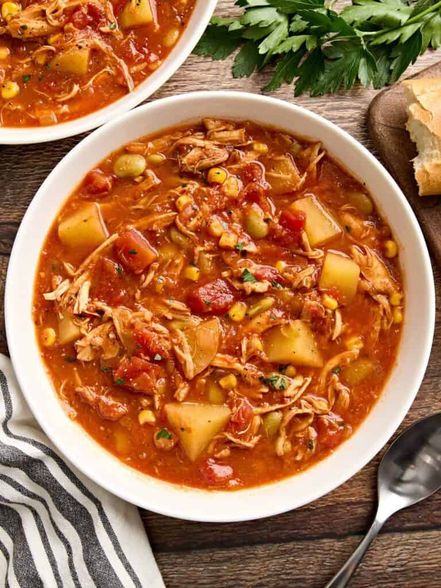

Brunswick Stew

Description
- Prep Time: 15 minutes.
- Cook Time: 25 minutes.
- Total Time: 40 minutes.
Ingredients
- 1 Tbsp olive oil.
- 1 yellow onion, diced.
- 2 cloves of garlic, minced.
- 2 Tbsp tomato paste.
- 1/2 tsp salt.
- 1/4 tsp smoked paprika.
- 1/4 tsp garlic powder.
- 1/4 tsp freshly cracked black pepper.
- Two 14.5 oz. cans of diced tomatoes.
- 1 cup frozen corn kernels.
- 1 cup frozen lima beans.
- 1 lb. Yukon gold potatoes, peeled and diced.
- 1/2 cup BBQ sauce.
- 4 cups cooked shredded chicken.
- 3 cups chicken broth.
Home